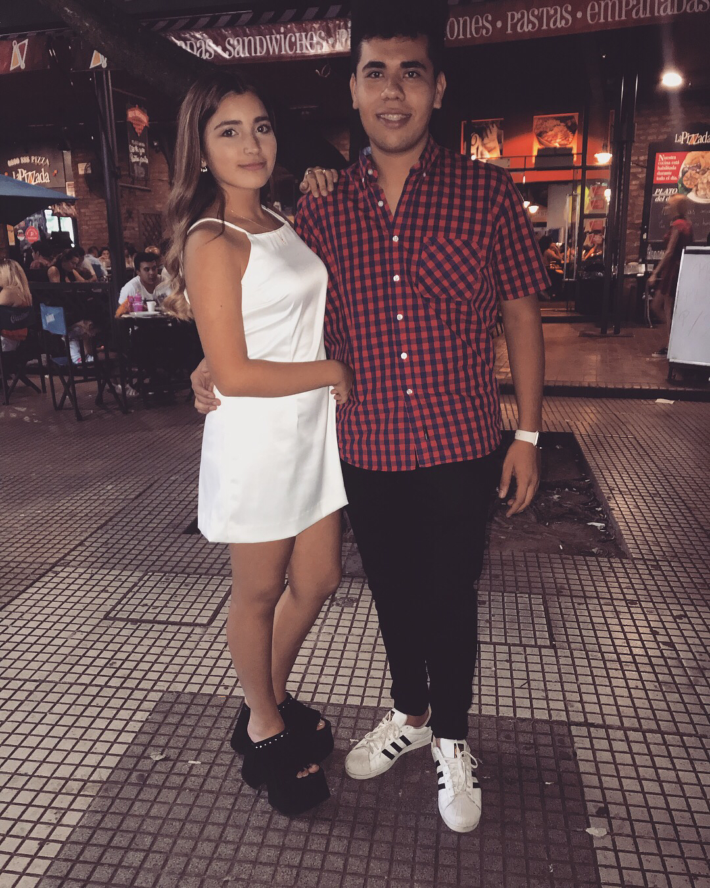

Escucha la cancion


04/02/18
Tu misa de 15
Una semana larga pensando en que podia regalarte sabiendo que te mereces todo por la hermosa persona que sos, por todo lo que te amo y lo importante que sos en mi vida, pensaba en el regalo y en que tenia que ir ahi, a donde iba a estar toda tu familia, tenia un miedo y una verguenza (problemas tecnicos nose como hacer la u con los dos puntitos) que no te imaginas unos nervios que me daban ganas de irme, pero era un momento tan especial para pasarlo con vos que me paso todo, cuando salias de la misa, me temblaban las piernas yendo al auto a sacar los regalos, los busque y me iba acercando a donde todos te saludaban, y comenzaron a decir "ayy" porque me veian con los regalos, no sabia como entregarte el anillo y de que forma tranquilizarme, me diste un abrazo, y se me paso todo, sabia que era ahi a donde pertenecia, en tus brazos, a tu lado, junto a la persona que conoci cuando tenia 13 años una niña, sabia que esas manos nunca me iban a dejar caer, que siempre ibas a estar, me enamore y jure amarte por siempre. Gracias.
Te amo